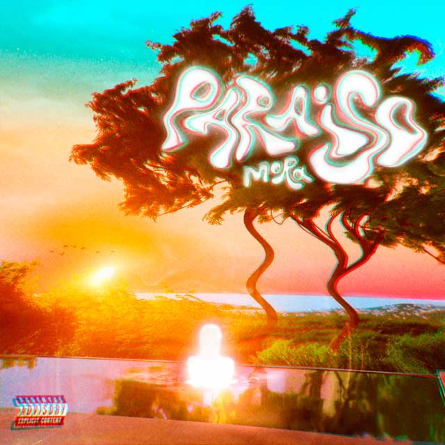
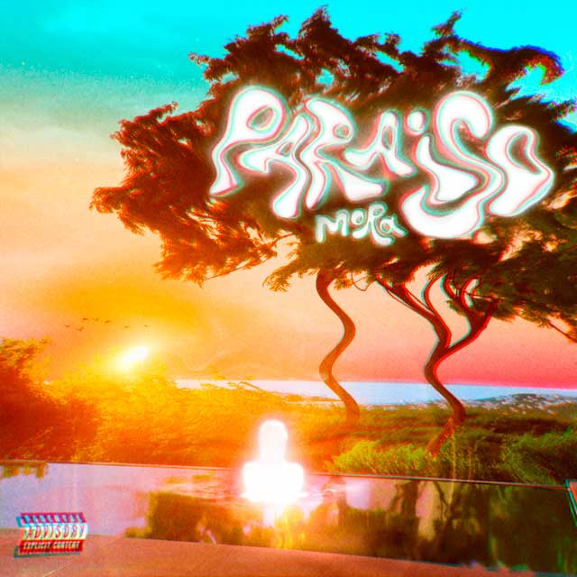

Mora inició en el mundo de la musica en el año 2017, siendo "Provocándome" uno de sus primeros sencillos. Añadido a esto, también se estrenó con canciones colaborativas como
"Pensabas" y "Señorita", canciones que hizo junto a Rafa Pabon por un lado, y con Eladio Carrión, Brray y Joyce Santana respectivamente. En este mismo año, siguió con los
temas indpendientes como "Nunca seremos", "Hasta cuando", "Noche loca", logrando asi su primer contrato con la disquera Rimas Music en 2018.
Teniendo un contrato musica con una Discografia, Mora no paró de publicar música. El primer sencillo que salió en esta etapa de su carrera fue "Miento", también sacó "Me Jukie",
"Si tú no estás", "Reír o Llorar", "Me niego", "Noche loca remix" y demás canciones. Podemos analizar claramente que Gabriel aprovechó este contrato para potenciar su carrera.
Tambíen muchas de estas canciones, son colaboraciones con nuevos artistas y en el momento mas grandes que él, lo que le ayudó a ganar reconocimiento. Todo esto en 2018-2019.
En el año 2020 este lanzó algunos sencillos mas, tales como "caliente" y "Malagradecida". Después tuvo un gran éxito en una colaboración junto al cantnate Jhay cortez en la
canción "Pégate". Desde este momento fue un momento de no retorno, ya que a raíz de esto, colaboró con el famosísimo artista Bad Bunny en su album YHLQMDLG con la canción
"Una Vez", una de las canciónes favoritas del album. Además, Mora aportó en la composición de dos canciones más del album, siendo estas "La díficil" y "Solia", ganando asi
mucho reconocimiento.
En el año 2021, Gabriel lanzó su primer album llamado "Primer día de clases", tambien conocido de manera abreviada como PDDC. Este fue un album que constó de 16 canciones en las que
contamos con las colaboraciones de artistas muy reconocidos como lo son Lunay, Farruko, Arcangel, entre otros. Los principales temas que destacaron de este album fueron "Cuando será",
"512", "Tuyo" y una canción especial que lanzaría su carrera al estrellato que es "Volando". Esta canción se le hizo un remix junto a Bad Bunny y Sech el cual superó las 350 millones
de vistas en Youtube. Posterior a esto, siguió sacando música solo y junto a varios artistas, diversificando asi su repertorio.
El 1 de abril de 2022, Mora lanza su segundo álbum llamado "Microdosis" una mezcla de ritmos nunca antes vista en las producciones de Gabriel. Este album fue un total exito, un disco de
15 canciones innovadoras y pegadizas. También contó con muy buenas colaboraciones con artistas como Sech, Zion, Kendo Kaponi, Jhay Cortez y Feid. Estos ultimos dos artistas fueron parte
de las dos canciones mas famosas de Microdosis, siendo estas "Memorias" y "La inocente". Otros temas que destacaron mucho también fueron "QSY", "Ojos Colorau", "Badtrip", entre otros.
Este mismo año, Mora llegó a romperla con su tercer album, segundo del año, "Paraiso". Ya en estos momentos el nombre de Mora era bastante reconocdo por lo que se tenía mucha expectativa
respecto a este nuevo disco. Toda esta presión no hizo temblar al cantante, debido a que fue uno de sus mejores albumes, los fans lo denominan como el album de menos "skips", refiriendose
a que ninguna canción dan ganas de pasarla al escuchar el album completo, siendo esta una manera en la que vanaglorian la producción. Mora inició junto con este lanzamiento el Paraiso tour,
siendo esta la primera gira musical del artista.
 

Por ultimo, en el año 2023, Mora no da pausa a su carrera con su ultima creación, el album "Estrella", el cual posterior a todos sus albumes pasados y la fama que ha adquirido por el camino,
tenía una expectativa gigantesca por parte de los seguidores. Este fue lanzado hace pocas 2 semanas por lo que aún no se puede dar una opinion profunda. Hasta el momento ha habido muchas
opiniones divididad al respecto. Sin embargo se destacan canciones como "El chacal", "Pasajero", "Donde se aprende a querer?" y demás canciones que cuentan con colaboraciones con artistas
como arcángel, Yandel, Saigo, Álvaro Díaz, entre otros. También se destaa que junto en un solo disco ritmos muy diferentes que generan sensaciones muy diferentes. Este afirmó que Estrella
era su album mas personal.